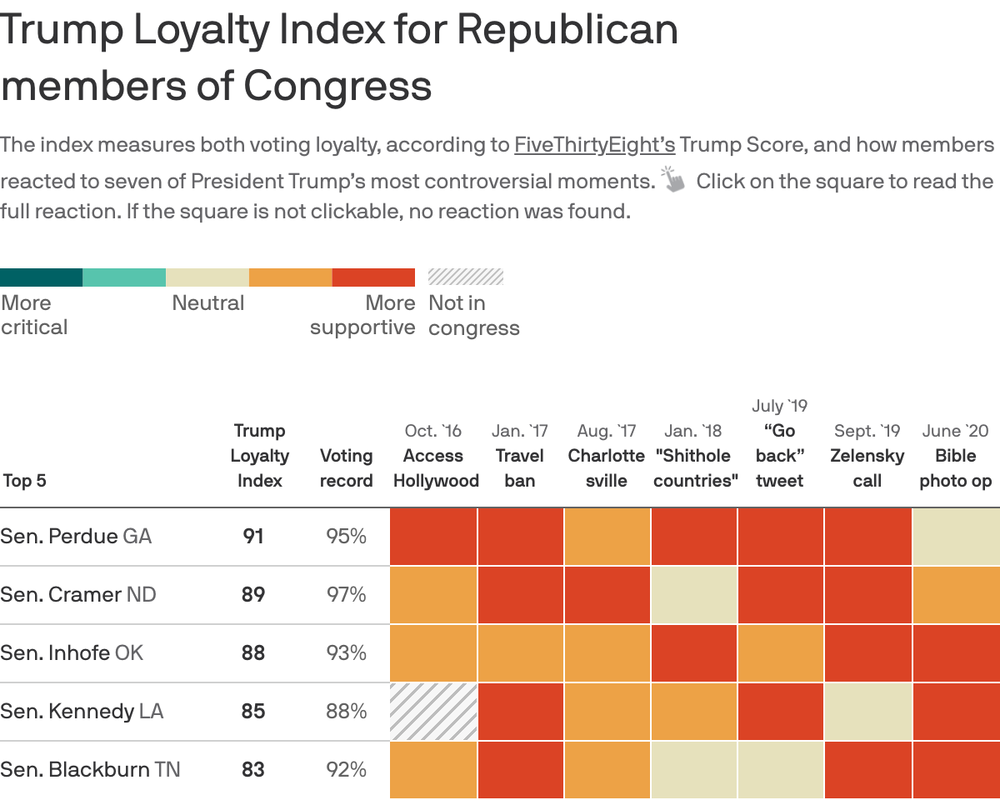
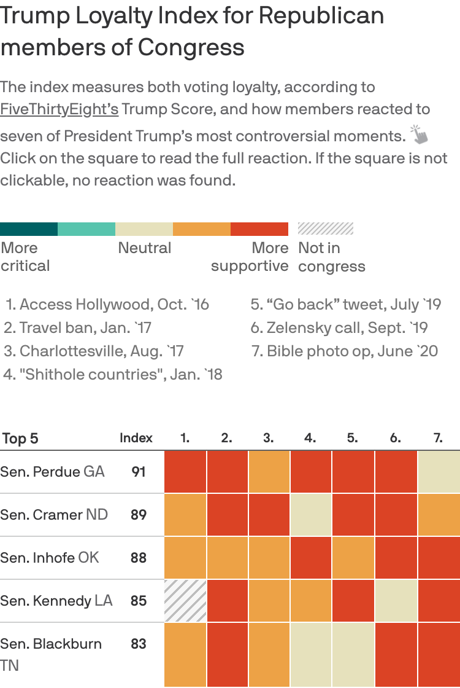
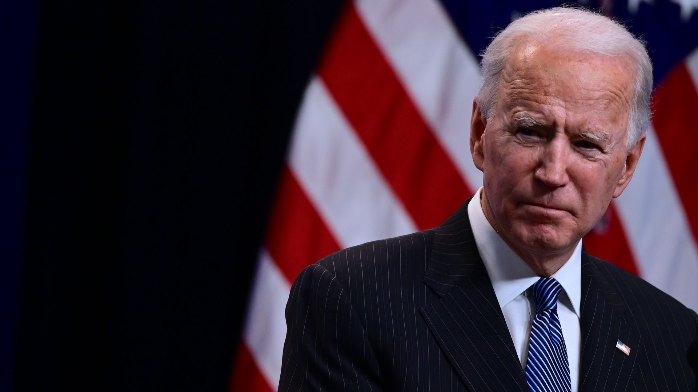

Axios' Trump Loyalty Index: Trumpiest senator back on ballot
Sen.David Perdue, whose upcoming runoff election in Georgia could help determine which party controls the Senate, has been President Trump’s top loyalist in the upper chamber, according to the 'Axios on HBO' Trump Loyalty Index.
Why it matters: In the wake of a presidential election largely seen as a referendum on Trump, Perdue’s unbreakable allegiance to the president effectively makes Trump an issue again in the runoff.
Between the lines: Even though President-elect Joe Biden leads Trump in Georgia as the state heads to a recount, Perdue has doubled down on his loyalty to the president.
The bottom line: Despite Georgia trending blue in a presidential race for the first time since 1992, Perdue and Loeffler’s fierce loyalty to the president signals that they see tapping into and turning out Trump’s base as their most promising path to retaining their seats.
Posted On: 2020-11-13T00:00:00
Posted By: Juliet Bartz



Content Date: 2020-11-13
Download Date: 2021-05-15
Document ID: L0C04CD4B